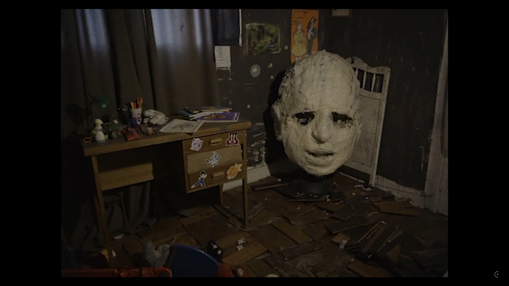
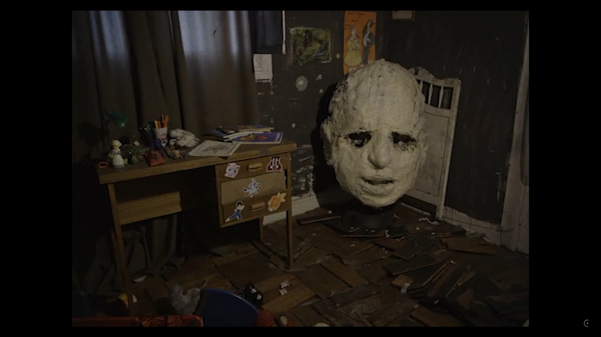

The Wolf House
2022.07.26
Contents
00 |
Contents
01 |
Introduction
02 |
Sources and Credits
03 |
Statistics
Introduction
Synopsis and Stills
From filmmaking duo Joaquín Cociña and Cristóbal León, comes The Wolf House (La Casa Lobo), the pair's first feature length film. It tells the story of Maria, a young woman who takes refuge in a house in southern Chile after escaping from a German colony. This retrospective covers the film's animation, themes, and some of the details behind its creation.
 

Sources and Credits
Images, music, and footage are listed in order of first appearance.
Research
- ...
Images
- ...
Music
- ...
Footage
- The Wolf House - Joaquín Cociña and Cristóbal León
- ...
Disclaimer
This project was created under the Fair Use Doctrine. There is an insubstantial amount of footage used, done so for a creative and educational purpose, and transformative from its original context. All rights belong to their respective owners and no infringement is intended.
Statistics
As of 2024.01.05
Reach
Date Published:
2022.07.26
View Count:
5,457
Impressions:
93,848
Impressions CTR:
03.60%
Engagement
Avg. View Duration:
03:05 | 32.70%
Comments:
16
Likes:
281
Subscriber Gain:
59